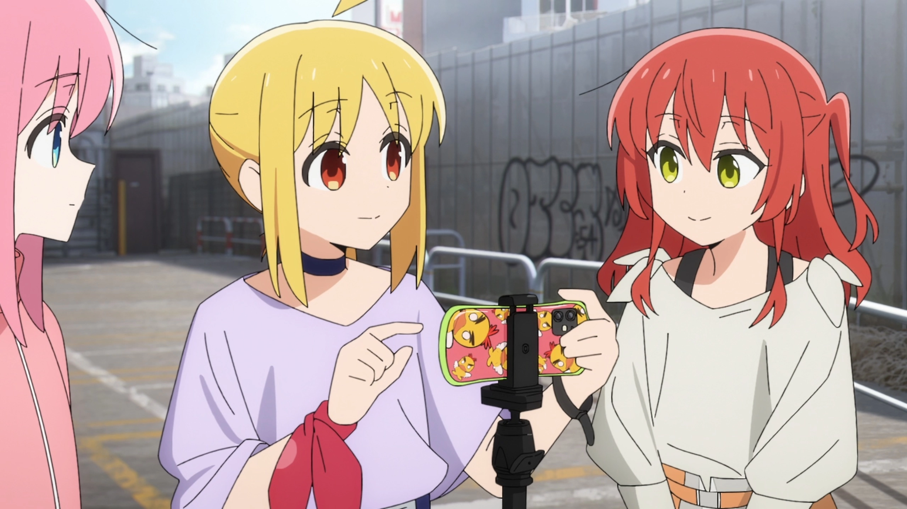

Kita Ikuyo (喜き多た 郁いく代よ, Kita Ikuyo) is one of the main characters in the manga and anime series, Bocchi the Rock!. She is in the first year of Shuka High School and is in charge of the guitar and vocals of the band, Kessoku Band. She started admiring Ryo Yamada after seeing her street concert.

General Information
- Birthday
- Age
- 15-16
- Gender
- Female
- Height
- 158 cm
- Weight
- 44 kg
- Hair Colour
- Red
- Eye Colour
- Yellow
- Japanese VA
- Ikumi Hasegawa (長谷川 育美)
Kita Ikuyo
Who is this Kita Ikuyo?
What is the Kessoku Band?
Kessoku Band (結束バンド) is a four-member rock band made up of Hitori Gotou (guitar), Nijika Ijichi (drums), Ryo Yamada (bass), and Ikuyo Kita (vocals and guitar). The name "Kessoku," meaning "unity" or "bond," reflects the friendship and solidarity that the members find through their music. Each member has a distinct personality that shapes the group—Bocchi's quiet dedication to guitar, Nijika's energetic leadership, Ryo's eccentric style, and Kita's lively spirit—creating a unique and heartfelt dynamic. Together, Kessoku Band embodies themes of self-discovery, friendship, and the highs and lows of band life.